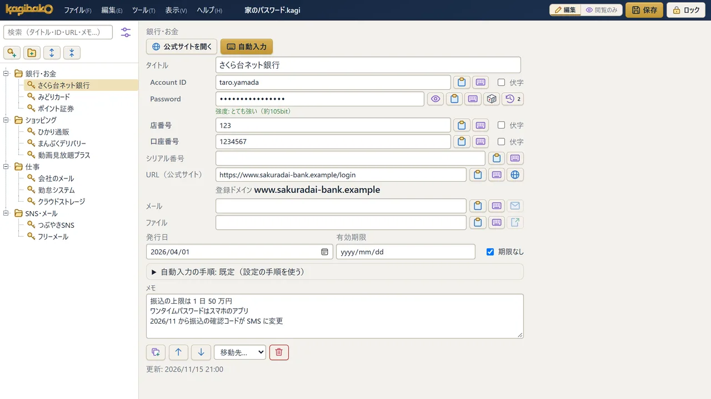
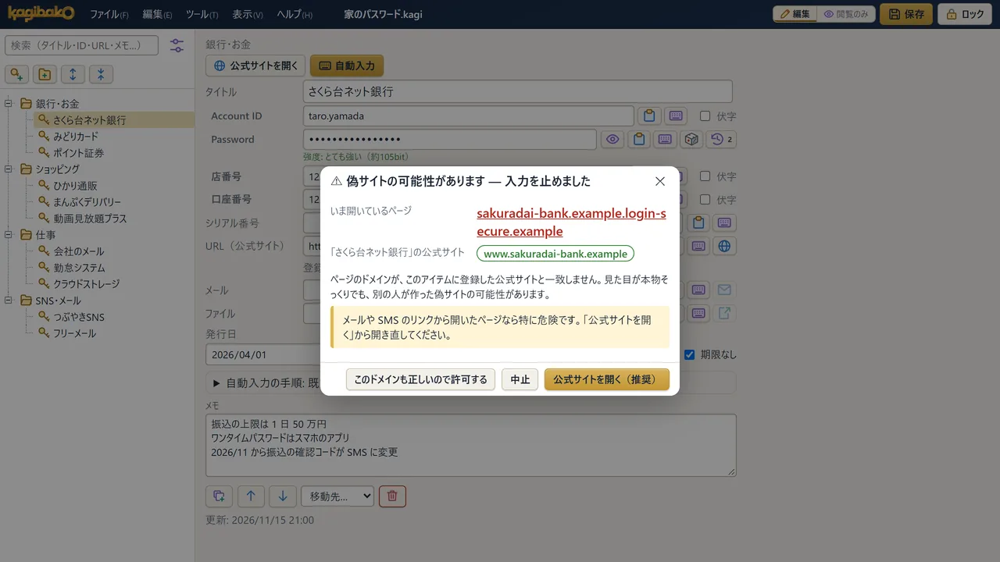
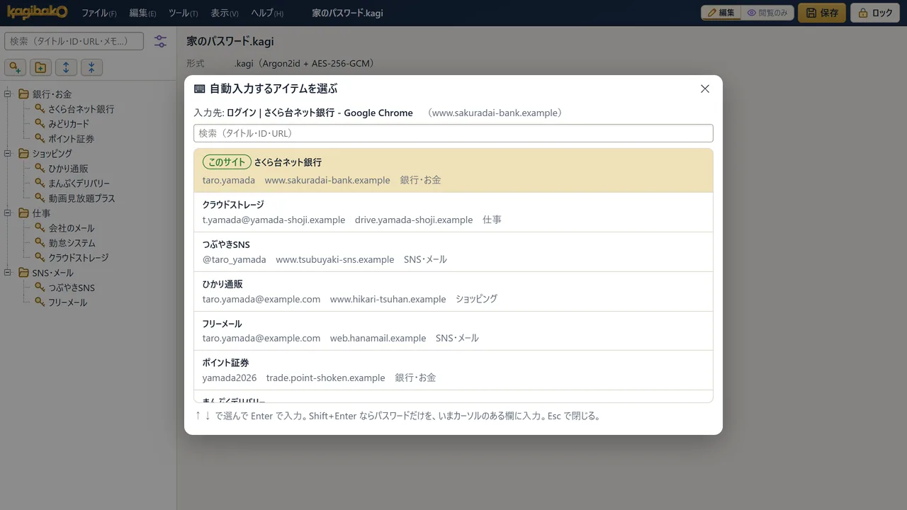
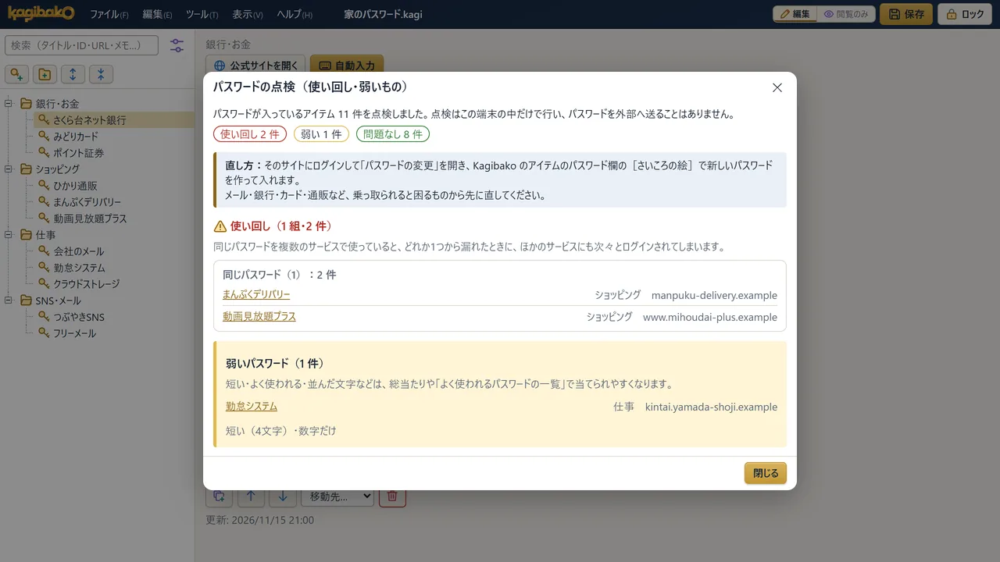
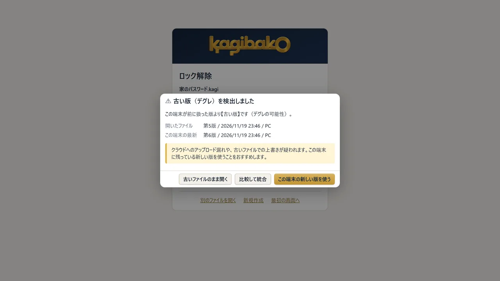
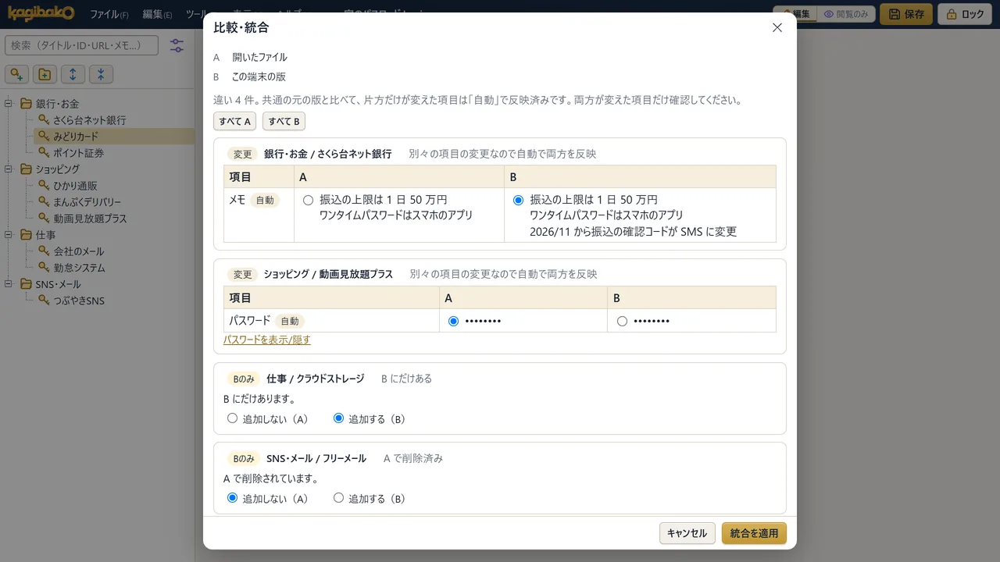
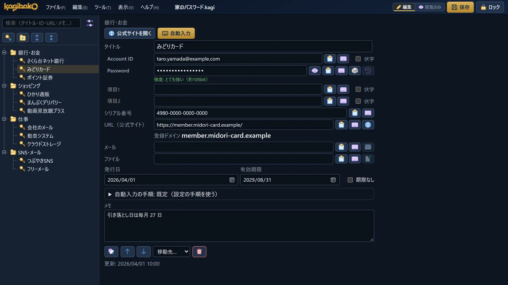

できること
- 偽サイトでは入力しない自動入力の直前に、ブラウザのアドレスバーと登録した公式サイトを照らし合わせ、違えば入力を止めます。銀行・カード・通販・行政など、主要なサービスの公式ドメインを最初から入れてあります。
- ブラウザやアプリに自動入力ボタンやホットキー（Ctrl+Alt+A）で ID とパスワードを打ち込みます。開いているサイトに合うアイテムが一番上に出ます。
- データは暗号化して手元にArgon2id と AES-256-GCM で暗号化した .kagi ファイルに保存。データを外部に送る機能はありません。
- 古いファイルでの上書きを防ぐファイルの「版」を記録し、古い版を開いたときや、別々に編集したときに警告します。
- 別々の編集を統合2つのファイルを項目ごとに比べて統合。片方だけが変えたところは自動で反映します。
- パスワードの点検と生成使い回しや弱いパスワードを一覧にし、強いパスワードをその場で作れます。変更前のパスワードも履歴に残ります。
- ほかのソフトから移せるChrome・Edge・Bitwarden・KeePass などの CSV や、.idm 形式のファイルを読み込めます。
- 見やすく、間違えにくくダークモード、文字の大きさの調整、誤って書き換えない「閲覧のみ」モード、自動バックアップ、自動ロック。
画面紹介







※画面の中のサービス名・ID・URL は、説明用に作った架空のものです。
使い始め方
- ダウンロードページから
Kagibako-（版数）-windows-x64.zipをダウンロードします。 - 好きな場所（例: C:\Tools\Kagibako）に展開して、
Kagibako.exeを起動します。インストールは不要です。 - 「新規作成」でファイルを作るか、今のデータを読み込みます。
必要なもの：Windows 10/11（64bit）、Microsoft Edge WebView2 ランタイム（通常は Windows に入っています）。
ライセンス
無料で使う・改変する・無料で再配布することは自由です。販売・有料での配布は禁止しています。個人が開発しているソフトのため無保証で、サポートや更新の義務はありません。正式な条件は LICENSE をご覧ください。